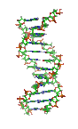

School of BichemistryEstd. 1984
Devi Ahilya Vishwavidyalaya, Indore (M.P.)

Reader
School Of Biochemistry, DAVV, Indore
Ph.D Devi Ahilya Vishwavidyalaya, Indore (1995)
meetajainind@yahoo.com
At present, research work on two major thrust areas is going on in my lab - metal stress and osmotic stress in relation to chlorophyll and nitrogen metabolism. Research work covers the studies on regulatory enzymes of chlorophyll metabolism, such as, delta-amino levulinic acid dehydratase, delta-amino levulinic acid synthesizing system, chlorophyllase, etc. Work done includes analyzing the mode of action of selenium, arsenic and mercury on chlorophyll metabolism including the enzymes in excised greening maize leaves. Effect of trace element pollutants on some enzymes of nitrogen metabolism, such as, nitrate reductase, glutamate dehydrogenase and glutamate synthase have also been carried out. Studies on effect of cadmium, lead and osmotic stress on chlorophyll and nitrogen metabolism are going on. Plan to evaluate the mode of action of metallic toxicants, osmotic stress inducers, kinetic analysis and biochemical characterization of the enzymes isolated from metal and osmotic stress treated tissue. Further, studies of molecular levels are also planned.
| # | Name | Year | Title |
|---|---|---|---|
| 1 | Ms. Juliana Sarangthem | 2012 | Effect of cadmium and lead on enzymes of chlorophyll metabolism and ammonia assimilation |
| 2 | Mr. Sharad Saurabh | 2015 |
Purification and characterization of MBLs from wild species of genus Allium and cloning of genes.
Co-supervisor: Dr. P. K. Singh |
| 3 | Ms. Swati Tiwary | 2015 | Osmotic stress- induced changes on chlorophyll metabolism and antioxidative system in maize leaves. |
| 4 | Mr. Prakash Malviya | 2016 |
Studies on physiological and biochemical changes in relation to grain yield, quality and drought tolerance in durum wheat genotypes.
Co-supercisor: Dr. Sai Prasad |
| 5 | Ms. Seema Kelotra | 2016 | Ligand binding studies with some caspases using computational methods. |
| 6 | Mrs Vaishali Mourya | 2017 |
Associationmapping for protein content in soybean germplasm lines.
Co-supervisor: Dr. Anita Rani. |
| 7 | Mr Jayesh Vaishnav | ---- | Effect of salt stress on chlorophyll metabolism and antioxidative system in maize. |
List of Publications :-